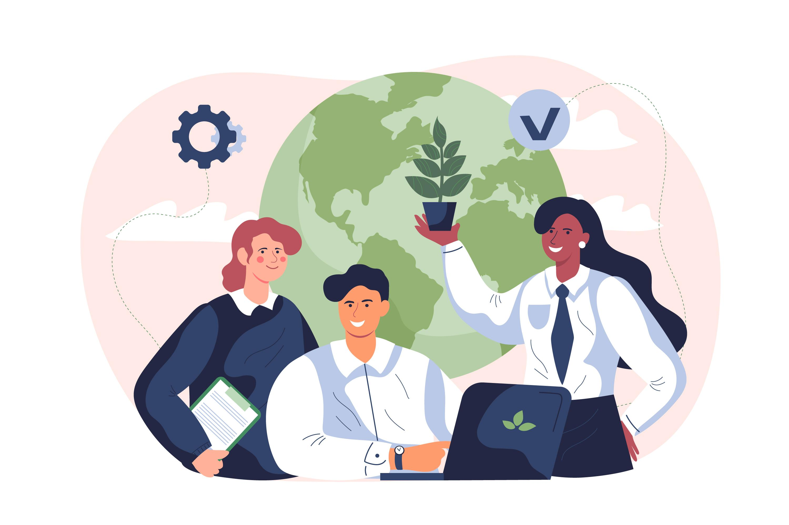

Blu - Combatendo a poluição marinha
Saiba porque estamos aqui e o que estamos dispostos a fazer pelos oceanos
Por quê estamos aqui
A poluição marinha é um dos maiores desafios ambientais do nosso tempo, ameaçando a saúde dos oceanos e a vida que eles sustentam. Na Blu, estamos comprometidos em combater esse problema de frente. Utilizando tecnologias inovadoras, monitoramos e analisamos a qualidade da água, ajudando a preservar os habitats marinhos para as futuras gerações. Junte-se a nós nessa missão e faça a diferença para um planeta mais saudável!
Nosso objetivo é fornecer soluções práticas e eficientes para reduzir a poluição marinha. Com uma equipe dedicada e apaixonada pelo meio ambiente, desenvolvemos ferramentas que permitem a qualquer pessoa contribuir para a conservação dos oceanos. Explore nosso site para saber mais sobre nossas iniciativas e como você pode se envolver.

Os habitats marinhos são essenciais para a saúde do nosso planeta, abrigando uma enorme diversidade de vida marinha e contribuindo para a regulação do clima. No entanto, esses ecossistemas vitais estão sob ameaça constante devido a atividades humanas como a pesca predatória, a poluição e as mudanças climáticas. Aproximadamente 50% dos recifes de coral do mundo já foram destruídos ou gravemente danificados, e a situação continua a piorar.

Na Blu, acreditamos que é possível reverter esse cenário. Estamos comprometidos em aumentar a conscientização sobre a importância dos oceanos e em promover ações que protejam e restauram esses habitats. Nossa missão é garantir que as futuras gerações possam desfrutar de mares limpos e cheios de vida.
Nossa solução
Na Blu, usamos sensores subaquáticos de última geração para monitorar parâmetros cruciais como temperatura da água, níveis de pH e concentração de oxigênio. Esses dados são integrados em uma plataforma centralizada, permitindo uma análise precisa e em tempo real das condições dos habitats marinhos. Essa abordagem inovadora nos ajuda a entender melhor o impacto das atividades humanas e a desenvolver estratégias eficazes de conservação.
Através da nossa tecnologia, fornecemos informações vitais para governos, ONGs e comunidades locais, capacitando-os a tomar decisões informadas e a implementar políticas de preservação mais eficazes. Juntos, podemos criar um futuro onde os oceanos prosperam novamente.

Nossos objetivos
Nossa missão vai além de apenas monitorar a saúde dos oceanos. Queremos transformar dados em ações concretas que façam a diferença. Entre nossos objetivos estão a compreensão aprofundada das condições atuais dos habitats marinhos, o desenvolvimento de estratégias de conservação baseadas em dados e a melhoria na gestão das áreas marinhas protegidas.

Além disso, buscamos promover a educação ambiental e aumentar a conscientização pública sobre a importância dos oceanos. Ao fomentar a pesquisa e a inovação em tecnologias sustentáveis, aspiramos a liderar uma nova era de proteção marinha.
Público impactado
Nossa iniciativa beneficia uma ampla gama de grupos, desde comunidades costeiras que dependem dos recursos marinhos para subsistência, até cientistas e pesquisadores dedicados ao estudo dos oceanos. Também impactamos positivamente pescadores artesanais, ONGs focadas em conservação marinha e jovens estudantes interessados em sustentabilidade.
Com a colaboração de empresas e indústrias que buscam práticas mais sustentáveis, estamos criando uma rede de suporte que reforça nossos esforços de conservação. Juntos, podemos garantir que nossos oceanos continuem a ser uma fonte de vida e prosperidade.
Benefícios
As nossas ações têm um impacto direto e positivo na recuperação dos ecossistemas marinhos. Ao contribuir para a recuperação de recifes de coral e outras áreas degradadas, protegemos a biodiversidade e ajudamos a reduzir a poluição marinha. Políticas informadas por dados precisos permitem uma gestão mais eficaz e sustentável dos recursos oceânicos.

Além disso, nossa iniciativa fortalece as economias locais que dependem do turismo e da pesca sustentável. Ao melhorar a qualidade da água e a saúde dos ecossistemas marinhos, promovemos um ambiente mais saudável e resiliente para todos.

Blu no dia-a-dia
Com o aplicativo Blu, você pode monitorar em tempo real o estado de conservação dos oceanos, receber dicas práticas para reduzir sua pegada ambiental e participar de ações locais para limpeza de praias e preservação da vida marinha. Acreditamos que cada pequena ação conta, e com o Blu, você tem o poder de fazer uma grande diferença.
Participe das nossas campanhas de conscientização, envolva-se em projetos de voluntariado e ajude a espalhar a mensagem sobre a importância de proteger nossos oceanos. Juntos, podemos criar um futuro onde os mares estão limpos e cheios de vida. Junte-se a nós nessa jornada e faça parte da mudança!